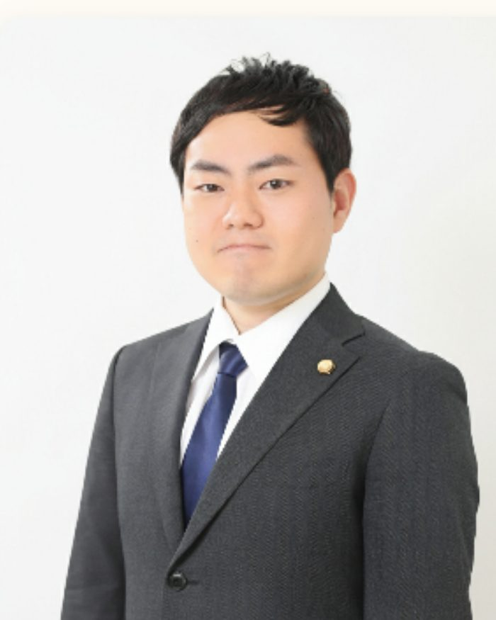

示談交渉
トレントアップロードで88万円請求
請求額88万円 解決額8万円
相手方の請求額の算定根拠を精査したうえで交渉し、 大幅に減額した金額での和解を成立させた事案です。
トレント（BitTorrent）の意見照会書・通知書・請求書が届いた方へ
書類の写真をLINEでお送りください。弁護士本人が内容を確認し、 これから何が起こるのか、費用はいくらになるのかを、分かりやすくお伝えします。
LINEをお使いでない方は お問い合わせフォーム・お電話 からもご相談いただけます。

加藤 信 弁護士（愛知県弁護士会所属）
IMPORTANT
お手元の書類には、相手方が誰で、何を求めているのかが書かれています。 それを拝見すれば、これからどうなるのか、どう対応すればよいのかをお伝えできます。 まずは書類を見せていただくところから始めましょう。
トレントの仕組みをよく理解しないまま使ってしまった、という方がほとんどです。 反省されている方が、きちんと手続きを終えて生活を立て直す——そのお手伝いをするのが私たちの仕事です。
ご相談の内容は弁護士の守秘義務により固く守られます。当事務所からご家族や勤務先へ 連絡することは一切ありません。
※ ご相談・ご依頼にあたっては、ご本人確認のためお名前・ご連絡先をお伺いします （匿名でのご依頼はお受けできません）。お伺いした情報が外部に伝わることはありません。
FULL SUPPORT
ご依頼後、相手方（権利者・法律事務所）との窓口はすべて弁護士がお引き受けします。 直接、電話や手紙のやり取りをしていただく必要はありません。
以上です。あとはお待ちいただくだけです。
進捗のご報告も、弁護士本人がLINEで直接お伝えします。
ご相談は、こんなやり取りから始まります
※ 実際のやり取りをもとにした再現イメージです。
FEE
最初にこの着手金をお預かりするだけで、あとから費用が増えることはありません。 成功報酬はいただきませんので、示談がまとまっても、金額が下がっても、追加のご負担は発生しません。
標準対応プラン（おすすめ）
33万円（税込）
＋ 成功報酬 0円
1社（1つの権利者からの請求）あたりの着手金です。
多くの方は1社からのご請求ですが、まれに別の作品・別の権利者から、 追加で意見照会書や通知書が届くことがあります。その場合も 2社目以降は半額でお受けし、6社目以降は追加の着手金をいただきません。
| 対応する社数 | 着手金（税込） |
|---|---|
| 1社目 | 33万円 |
| 2社目以降 | 半額の 16万5,000円 |
| 6社目以降 | 追加着手金 なし |
費用について、正直にお伝えしておきます。
クレジットカード対応
VISAMastercardJCBAMEX
分割払いも可能
ご利用のカード会社の分割払いをご利用いただけます。 （回数・手数料は各カード会社の規定によります）
手元にまとまったお金がなくても、今日から対応を始められます。
回答書のみ作成プラン
11万円（税込）
意見照会書への回答書案の作成、法的アドバイス、書類の確認・修正を行うプランです。 相手方とのやり取りはご本人に行っていただきます。 すべてお任せになりたい方には、標準対応プランをおすすめします。
訴訟対応プラン
着手金 33万円（税込）＋ 成功報酬
裁判を起こされた場合に、訴訟手続きの全面対応・裁判所への出廷代理・和解交渉までを行うプランです。 標準対応プランからの継続の場合、追加着手金は11万円（税込）となります。 成功報酬は減額できた金額の20%です。
RESULTS
インターネットトラブル事案の解決実績は100件以上。 すべての案件が0円になるわけではありません。 事案の内容と請求の根拠を精査したうえで、適正な金額での解決を目指します。
示談交渉
請求額88万円 解決額8万円
相手方の請求額の算定根拠を精査したうえで交渉し、 大幅に減額した金額での和解を成立させた事案です。
示談交渉
請求額150万円 解決額50万円
支払い可能な範囲での和解を成立させた事案です。分割でのお支払いにも対応しました。
示談交渉
請求額80万円 解決額0円
請求の根拠に疑問があった事案です。裏付けを確認したうえで交渉し、支払いなしで終了しました。
示談交渉
請求額55万円 解決額0円
相手方の主張する損害額の算定根拠を争い、支払いなしで解決した事案です。
※ 掲載内容は依頼者の同意を得て匿名加工したものです。個々の案件の結果を保証するものではありません。 請求額が低額でも支払いが必要となる事案、逆に高額の請求が大幅に減額される事案など、結果は事案により異なります。
PROCESS
ご相談から解決まで、4つのステップで進みます。
お名前と、届いた書類の写真を送ってください。無料・24時間受付です。
弁護士本人が書類を確認し、取り得る対応・見込まれる解決額・費用の総額をお伝えします。原則24時間以内、土日祝も対応します。
ご納得いただけた場合のみご依頼ください。着手金はクレジットカードでお支払いいただけます（分割払いも可能です）。
相手方への連絡・回答書の提出・示談交渉まで、弁護士が代理します。進捗はLINEでご報告します。
土日祝も対応・原則24時間以内に弁護士本人が返信
回答期限が迫っている方もご安心ください。最速で当日のご面談も可能です。
LAWYER
加藤 信 弁護士
愛知県弁護士会所属／冨田・島岡法律事務所
アダルト動画のアップロードに関するご相談も多くいただきます。当事務所では男性弁護士が偏見なく、 プライバシーに配慮した聞き取りを行います。恥ずかしがらずに、まずはお気軽にご相談ください。
愛知県・岐阜県・三重県を中心とした東海圏
※ LINE・オンライン面談により、全国からご依頼いただけます。ご来所は必須ではありません。
中日新聞掲載（2025年6月2日）
加害者側のインターネットトラブルを多く取り扱う弁護士としてコメント
ITベンゴプロ 監修
インターネットトラブル関連の法的知識について専門家として監修
FAQ
当事務所からご家族・勤務先へ連絡することは一切ありません。ご相談内容は弁護士の守秘義務により守られます。 ご郵送物についても、事務所名を出さない方法や、送付自体を控える対応が可能ですので、 ご相談の際にお申し付けください。
なお、ご自宅に届く相手方からの郵便物についても、弁護士が窓口になった後は 原則として当事務所宛てに送付されるようになります。
事案によって異なります。対応しないまま回答期限を過ぎると、訴訟に進んだり、 遅延損害金が加算されたりすることがあります。
お手元の書類がどのような状況にあたるかは、相手方が誰で、どのような請求根拠を示しているかを 確認すればお伝えできます。まずは書類を拝見させてください。無料で確認し、率直にお伝えします。
著作権侵害は刑事罰の対象となる行為ですが、トレントの個人利用に関する事案の多くは、 権利者からの民事上の損害賠償請求（示談交渉）として進みます。
ただし、事案の内容や対応の仕方によってリスクは変わります。 必要以上に不安になる前に、まずは書類を確認させてください。 現時点で何が起きているのか、これから何が起こり得るのかを、順を追ってご説明します。
着手金はクレジットカードでお支払いいただけます（VISA / Mastercard / JCB / AMEX）。 各カード会社の分割払いをご利用いただけますので、手元にすぐに現金がなくても、 対応を始めることができます。
相手方へお支払いする示談金についても、分割での和解がまとまるケースがあります。 費用面が不安な方も、まずはご相談ください。
弁護士費用（着手金）とは別に、相手方へお支払いする示談金・和解金が発生する場合があります。 金額は、対象作品・請求してきた権利者・アップロードの態様などによって大きく異なります。
書類を拝見すれば、これまでの事案からおおよその見込みをお伝えできます。 「弁護士費用＋示談金で、総額いくらくらいになるか」を、ご依頼前にご説明します。
手遅れではありません。すでに連絡してしまった、一部認めてしまった、という段階からのご相談も 多くお受けしています。何をどう伝えたかを教えていただければ、そこから取り得る対応をご説明します。
まだ和解書に署名していない段階であれば、条件を交渉できる余地が残っていることが多くあります。 署名・入金の前に、一度ご相談ください。
トレントは、ダウンロードと同時に自動的にアップロード（送信可能化）が行われる仕組みです。 そのため「ダウンロードしただけのつもり」でも、記録上はアップロードした側として扱われていることがあります。
一方で、記載された作品にまったく心当たりがない場合、 回線の共有や特定の誤りといった可能性も検討します。 心当たりがないこと自体が不利になるわけではありませんので、そのままお伝えください。
意見照会書は、回線の契約者に対して送られます。実際に利用したのがご家族であっても、 まず契約者に届くのはそのためです。
誰がどのように利用していたかによって、取るべき対応が変わります。 ご家族に確認しづらいという事情も含めて、ご相談ください。
はい。LINEとオンライン面談で全国からご依頼いただけます。ご来所は必須ではありません。 契約書類も郵送・電子でのやり取りが可能です。
相談は無料です。費用のお見込みと対応方針をお伝えしたうえで、 ご納得いただけた場合のみご依頼ください。無理におすすめすることはありません。
LINEで書類の写真を送る 無料・24時間受付／原則24時間以内に弁護士本人が返信LINEをお使いでない方は、こちらから